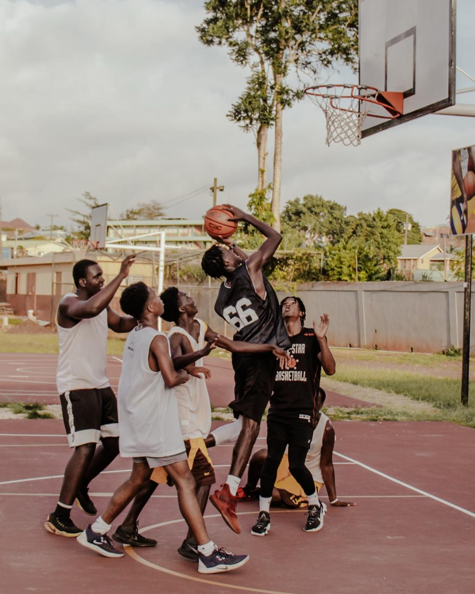

Why Basketball Is My Favourite Sport

There are two people I admire most when I think about the sport: Steph Curry, of course, but more importantly, my brother. The two are alike in my mind, both extremely dedicated and passionate about perfecting their craft. I watched my brother practice endlessly when we were younger and was often forced to play against him (I did beat him once, though he'll never admit it).To witness that kind of commitment up close showed me that greatness comes from consistency, hard work, and never giving up on the process.
I think that's where my love for the sport really began (aside from the fact that everyone expected me to be as good as my brother). I enjoy playing the game just as much as I enjoy watching it, and there's something about basketball that lights a fire in me. It's a feeling that's hard to put into words but impossible to ignore.